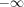
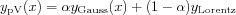

Gaussian, Lorentzian and pseudo-Voigt line shapes.
y = lshape(x,x0,fwhm) y = lshape(x,x0,fwhm,diff) y = lshape(x,x0,fwhm,diff,alpha) y = lshape(x,x0,fwhm,diff,alpha,phase)
lshape evaluates normalised line shapes over a given abscissa
vector x. x0 is the centre of the line shape, fwhm
denotes the line shpe's full width at half height (FWHM).
If diff is given, it specifies the derivative wanted: 1 for first
and 2 for second derivative. 0 means no derivative, which is the
default. -1 indicates the integral with  as lower limit.
If alpha is given, it determines the line shape function.
alpha = 1 is a pure Gaussian (the default), and
alpha = 0 a pure Lorentzian. Any value
in between gives a hybrid pseudo-Voigt function

For the pseudo-Voigt function either one or two widths can be
specified. If fwhm is a scalar, it is used for both components,
if it is a 2-element vector, the first element gives the line width for
the Gaussian and the second that for the Lorentzian component.
phase determines the phase of the Lorentzian component. 0 is pure absorption, and pi/2 is pure dispersion.
The code
x = -100:100; centre = -30; y = lshape(x,-30,20,1,0); plot(x,y)
produces a plot of the first derivative of a Lorentzian, a very common line shape in CW EPR spectroscopy.
For the mathematical expressions for the various line shapes, see gaussian and lorentzian.
convspec, gaussian, lorentzian, voigtian